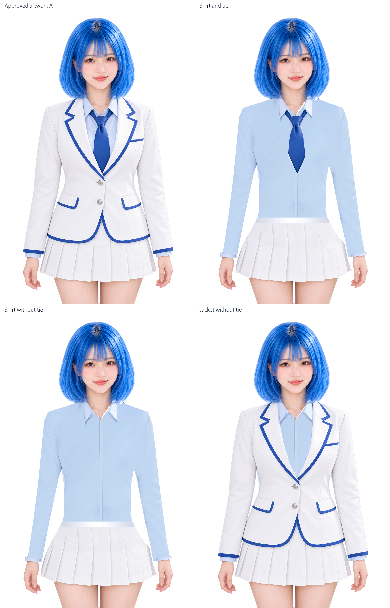
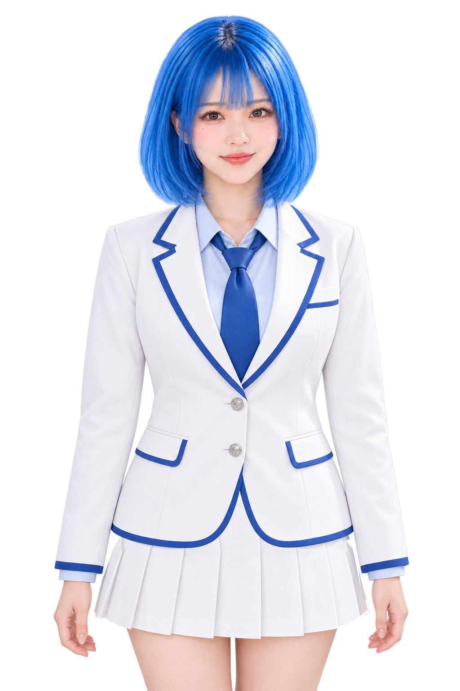

響V3 — 着せ替え素材の確認
承認原画Aの顔・髪・体格を基準に、衣装の隠れ面と接合部分を制作しました。衣装を選ぶと、独立したPNG素材から組み直します。
静止した衣装の組立を確認する画面です。可動姿勢の造形、最終的な自然さ、Human Acceptanceは別に確認します。
素材を読み込み中…
素材の構成を見る
原画と前回の14部品は保全しています。身体・ジャケット・シャツ・ネクタイ・下衣を別素材として保持し、衣装の下にある布地と身体接合面もPSDで編集できます。

衣装を外したときに見える襟・胸・袖口・腰を比較します。
ジャケットと下衣の素材を個別に交換した確認。